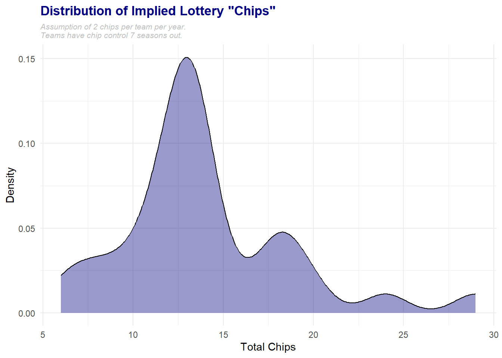

Today we’re joined by Josh Roberts to take our first look ahead to the 2023 NBA Draft. We review his big board and tackle some of the interesting wrinkles thus far.
Intro
Welcome to Jabber Jazz | Fan-driven, Ad-free content on Utah Jazz basketball
What’s the 2023 NBA draft looking like for the Utah Jazz?
Warning: package 'tidyverse' was built under R version 4.1.3
-- Attaching packages --------------------------------------- tidyverse 1.3.2 --
v ggplot2 3.4.0 v purrr 0.3.4
v tibble 3.1.8 v dplyr 1.0.10
v tidyr 1.2.1 v stringr 1.5.0
v readr 2.1.3 v forcats 0.5.2
Warning: package 'ggplot2' was built under R version 4.1.3
Warning: package 'tibble' was built under R version 4.1.3
Warning: package 'tidyr' was built under R version 4.1.3
Warning: package 'readr' was built under R version 4.1.3
Warning: package 'purrr' was built under R version 4.1.2
Warning: package 'dplyr' was built under R version 4.1.3
Warning: package 'stringr' was built under R version 4.1.3
Warning: package 'forcats' was built under R version 4.1.3
-- Conflicts ------------------------------------------ tidyverse_conflicts() --
x dplyr::filter() masks stats::filter()
x dplyr::lag() masks stats::lag()
Translating current first round draft picks and associated protections into lottery chips for each team. Second round picks aren’t considered at this time.
There are 420 total chips in circulation at all times (2 chips per team x 30 teams x 7 years of control).
Methodology
Own Picks: 2
i.e. 2023 UTA 1st
Unprotected Picks:
Receiver: 2
Sender: 0
i.e. 2023 MIN 1st
Pick Swaps:
Receiver: 2
Sender: 2
i.e. 2028 CLE 1st
___ Favorable
All Parties Owned Picks: 2
i.e. 2023 1st between HOU, BKN, PHI, UTA
Top 5 Protected Picks:
Receiver: 2
Sender: 0
i.e. 2029 MIN 1st
Other # Protected Picks:
Receiver: 1
Sender: 1
i.e. 2024 SAC 1st
Multi-year Protected Picks:
Receiver:
First year: 1-2 (see above)
Thereafter: 0
Sender:
First year: 0-1 (see above)
Thereafter: 2
2024 UTA 1st protected through 2026
Results
ggplot(data) +geom_density(aes(x = total), fill ="navy", alpha =0.4 ) +labs(title ="Distribution of Implied Lottery \"Chips\"", subtitle ="Assumption of 2 chips per team per year.\nTeams have chip control 7 seasons out.", x ="Total Chips", y ="Density" ) +theme_minimal() +theme(plot.background =element_rect(fill ="#FFFFFF", color =NA), plot.title =element_text(color ='navy', face ='bold', size =13 ), plot.subtitle =element_text(color ='gray', face ='italic', size =8 ) )

ggplot( data) +geom_col(aes(x = Team, y = total), fill ="navy", alpha =0.4, width =0.75, linewidth =0.25, color ="black" ) +coord_flip() +scale_x_discrete(limits=rev) +labs(title ="Implied Lottery \"Chips\" By Team", subtitle ="Assumption of 2 chips per team per year.\nTeams have chip control 7 seasons out.", y ="Total Chips" ) +theme_minimal() +theme(plot.background =element_rect(fill ="#FFFFFF", color =NA), plot.title =element_text(color ='navy', face ='bold', size =13 ), plot.subtitle =element_text(color ='gray', face ='italic', size =8 ), axis.text.y =element_text(size =5), axis.title.y =element_blank() )